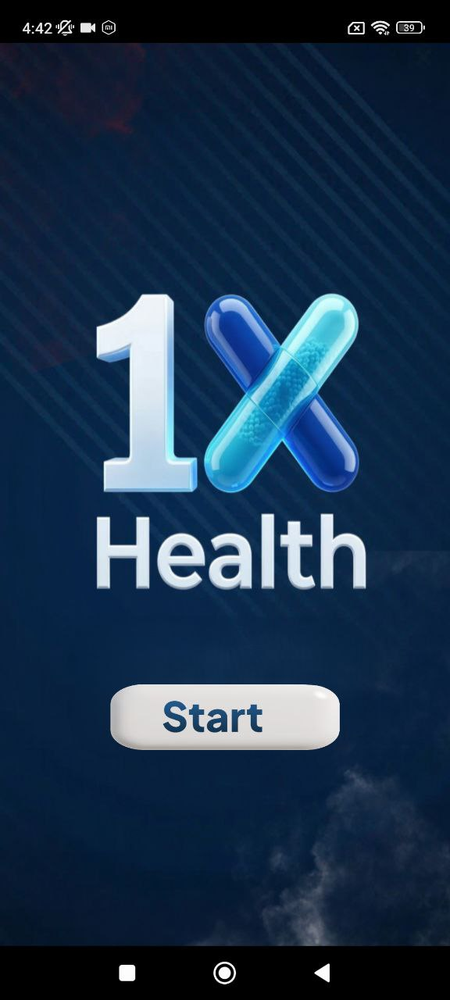
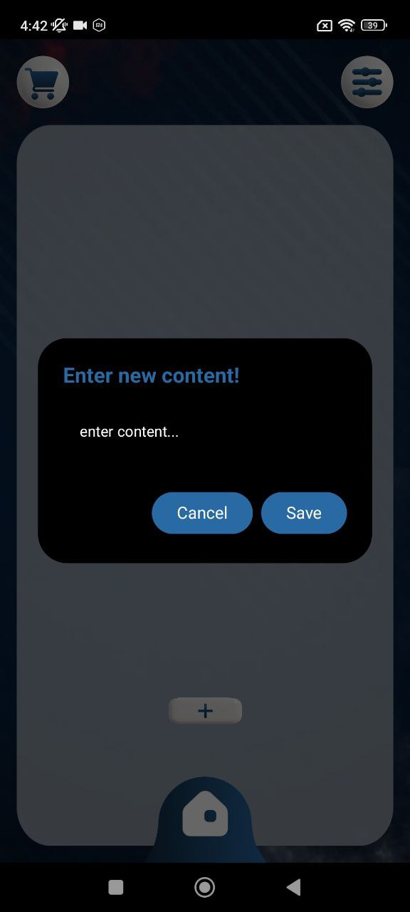
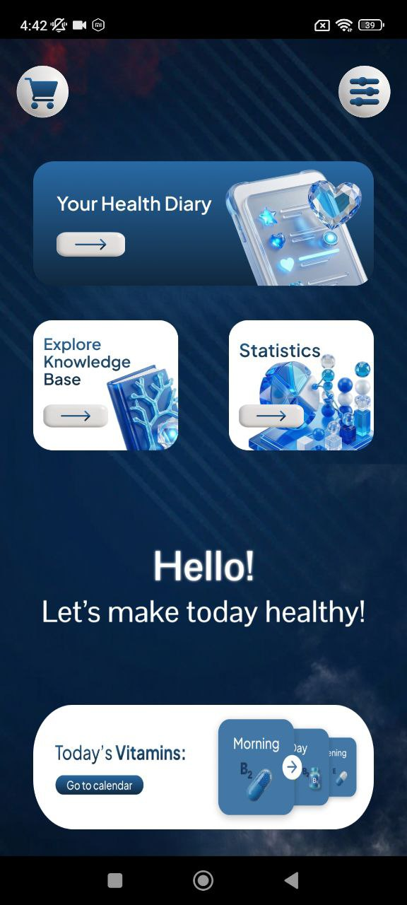
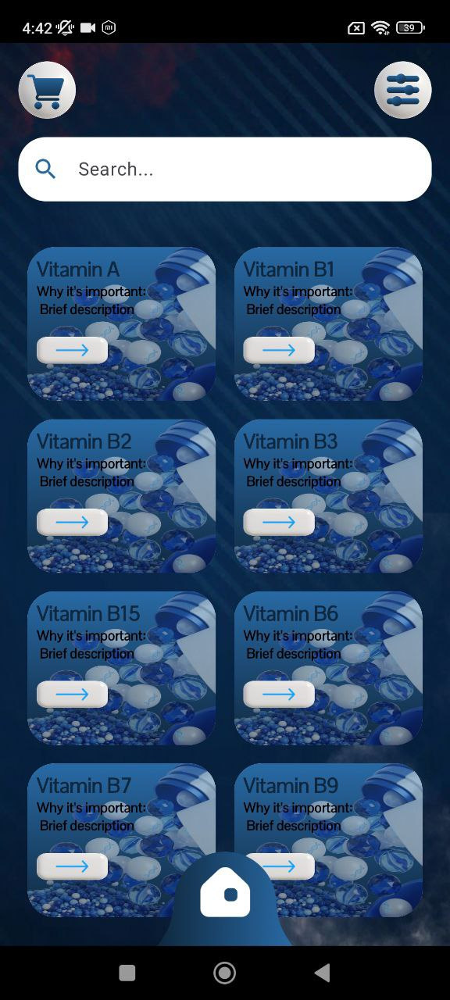
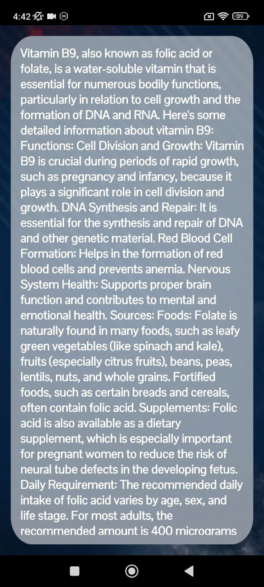
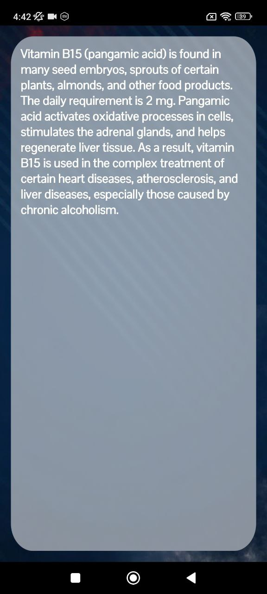
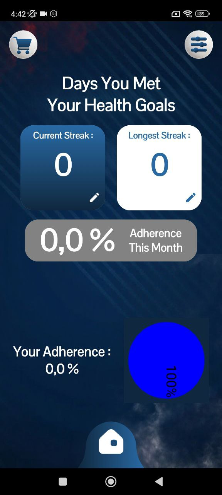
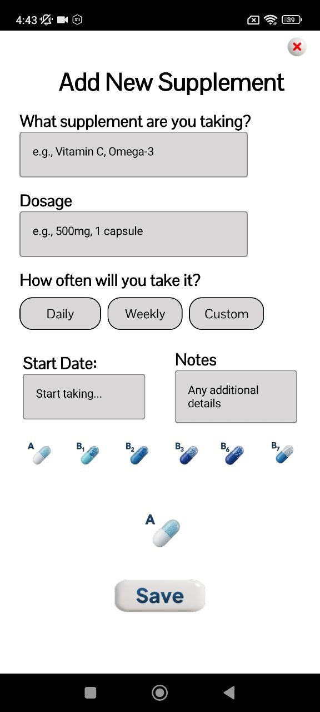

Daily health tracking
0
main wellness zones in one app
0
featured screens shown on the landing page
0
personal place for healthier routines
Build better supplement habits one day at a time.
1x Health Journey helps users organize supplement routines, keep a personal health diary, explore vitamin knowledge, and follow adherence progress inside one soft, clean mobile experience.
Supplement diary
Vitamin knowledge base
Adherence statistics
Daily diary
Health knowledge
Progress tracking

Interface mood
Soft wellness glass UIBuilt for
consistent daily supplement habits
Style
Health startup / glassmorphism
Purpose
Track vitamins and routines
Main benefit
More consistency, less chaos
Core features
A wellness app designed around simple repeatable habits
Instead of dropping all screenshots into one gallery, this section turns the strongest screens into clear product advantages.

Selected module
Health Dashboard
The dashboard combines diary access, knowledge base entry points, statistics, and today’s vitamin flow in one friendly landing screen.
Your daily wellness hub starts here
Users can quickly jump into the diary, explore health information, check statistics, and review the day’s supplements.
Track personal wellness notes without friction
The diary interface makes it easy to record custom health entries instead of leaving everything unstructured.
A searchable vitamin knowledge base
Educational content is turned into a more approachable browsing experience with cards and quick access actions.
Long-form wellness content inside the app
Vitamin explanation screens turn the product into more than a tracker by adding educational value.
Visible consistency helps build better habits
Stats give users a simple way to see whether they are sticking to their health goals over time.
Supplement planning is structured and clear
The setup screen helps users create routines instead of improvising what to take each day.
App journey
From start screen to healthier daily consistency
This site uses a softer wellness flow with alternating story cards so the product feels calmer and more structured than the earlier sites.
Step 01
Start with a clean wellness entry point
The opening screen gives the app a branded first impression and positions it as a simple daily health companion.
Step 02
Review your daily dashboard and vitamin flow
The home screen acts as a central command area with wellness shortcuts, cards, and today’s supplement activity.
Step 03
Log entries and explore supplement knowledge
Diary input and searchable vitamin cards make the app useful for both tracking and learning.


Step 04
Read detailed vitamin information when needed
Rich detail pages support users who want context behind a supplement instead of just a checklist.


Step 05
Track progress and build a repeatable routine
Statistics and supplement setup screens help transform motivation into a more consistent health habit.


Screen gallery
Curated screens inside a wellness carousel
This section uses a soft card carousel and card labels instead of a plain grid so the landing page feels more like a real startup site.
Current screen
Start Screen
Reviews
Simple enough for daily use, useful enough to keep coming back
Sample review cards for the landing page layout.
★★★★★
“I like that it combines habit tracking and information in one place. It feels calmer and less chaotic than typical health apps.”
Anna M.
Wellness routine user
★★★★★
“The supplement setup screen is clear, and the statistics page makes it easier to stay accountable to my routine.”
Daniel R.
Daily supplement tracker
★★★★★
“The knowledge base is a nice extra. It makes the app feel more complete than a simple reminder tool.”
Olivia S.
Health content reader
Ready to start?
Download 1x Health Journey and make your wellness routine easier to follow.
Track supplements, learn about vitamins, build better consistency, and keep your daily health journey in one place.